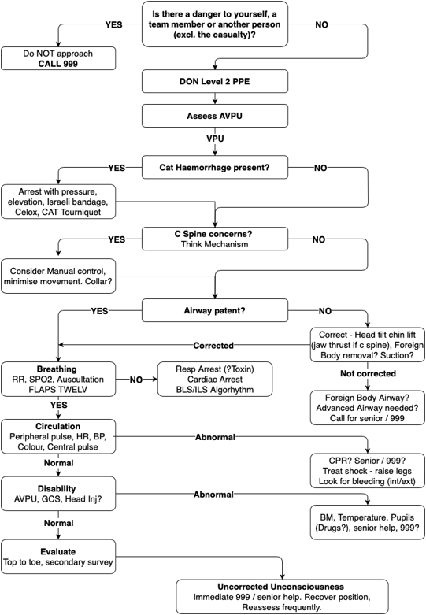
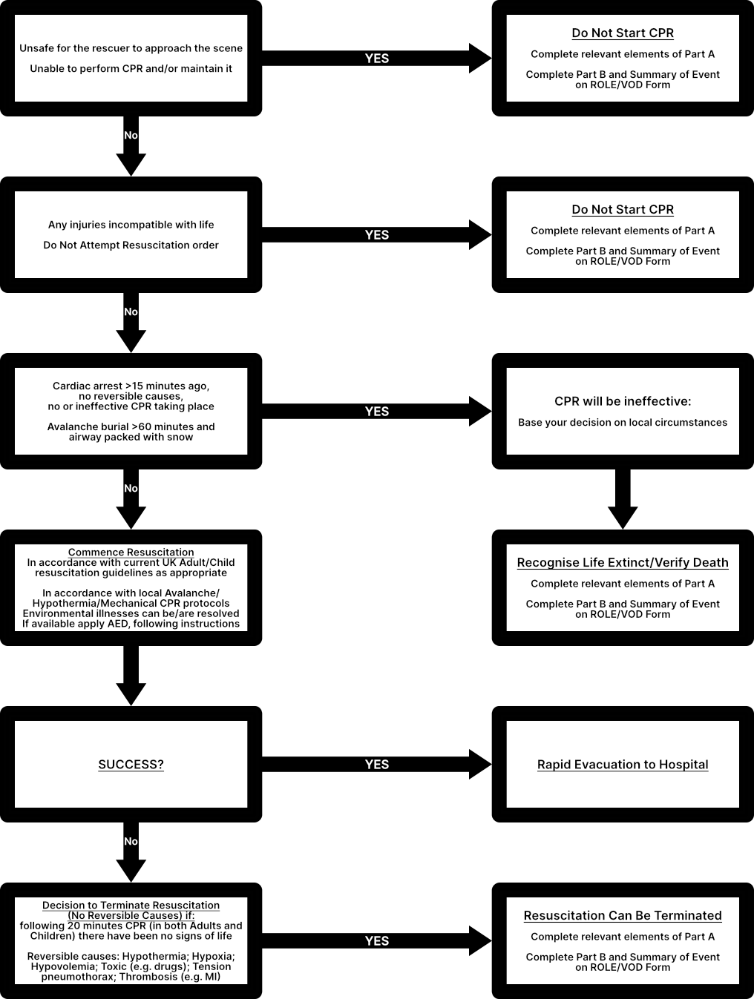

The LRFR airway management algorithm is detailed below:
Open Airway
• Head tilt chin lift (jaw thrust if C spine concerns)
• Visualise airway; foreign
body?
Can you safely remove?
• Consider suction if needed
• Consider senior support for advanced
suction/possible
foreign body removal
First Line Adjuncts
• Correctly sized OPA – front teeth to angle of the jaw
• Correctly sized NPA (adults
only)
• SILO the patient (if tolerated)
• Utilise tongue depressor for paediatrics
• Lube
NPAs first,
twist to aid insertion but withdraw if twist is not successful – DO NOT FORCE
Ventilations
• Utilise 2 handed TE grip where possible – CE grip if not
• Ventilate to minimal
chest
rise (over 1/3 of the bag for 100kg adults)
• 1 breath every 6 seconds (for adults – ‘page for age’ for
paediatrics)
• DO NOT over-ventilate or over-bag – to avoid inflating the stomach
Advanced Airway
• In arrest – upgrade to i-gel as soon as possible
• Check airway prior to insertion –
is
suction needed? Foreign body?
• Anticipate difficult airway:
R - Restricted mouth opening
O -
Obstruction
D - Disrupted or Distorted airway
S - Stiff lung or C spine
Failed Airway
• i-gel and simple adjuncts fail – no air entry, no chest rise
• Manage as best as
possible to achieve air entry
• Call immediate senior support and update 999 for failed airway – request
‘critical care support’
ROSC Ventilations
• Maintain oxygen therapy and keep the airway open
• Continue ventilating or assisting
the
patient with supplemental ventilations to maintain RR>10
• Avoid causing barotrauma by not over
ventilating,
particularly on inhalation
• If the patient no longer tolerates the airway, consider removing it – consider
cascading down to simple adjuncts and supplemental BVM if they can tolerate it and it is required
If there is an unconscious casualty:

If you are unsure when not to resuscitate:
